เกี่ยวกับประเพณีชักพระ
ประเพณีประเพณีชักพระ ประเพณีชักพระเป็นประเพณีท้องถิ่นของชาวใต้ ซึ่งเป็นประเพณีทำบุญในวันออกพรรษา ซึ่งตรงกับ วันแรม 1 ค่ำเดือน 11 ซึ่งเชื่อกันว่า เมื่อครั้งที่พระพุทธเจ้า เสด็จไปจำพรรษา ณ สวรรค์ชั้นดาวดึงส์เพื่อโปรดพระมารดา เมื่อครบพรรษาจึงเสด็จมายังโลกมนุษย์ พุทธศาสนิกชนจึงมารอรับเสด็จ แล้วอัญเชิญพระพุทธ เจ้าขึ้นประทับบน บุษบกแล้วแห่ไปรอบเมือง
ประวัติความเป็นมา ประเพณีประเพณีชักพระ
ประเพณีชักพระเป็นประเพณีทพราหมณ์ศาสนิกชนและพุทธศาสนิกชนปฏิบัติสืบต่อกันมา สันนิษฐานว่าประเพณีนี้เกิดขึ้นครั้งแรกในประเทศอินเดีย ที่นิยมเอา เทวรูปออกแห่ในโอกาสต่าง ๆ ต่อมาพุทธศาสนิกชนได้นำเอาคติความเชื่อดังกล่าวมาปรับปรุงให้สอดคล้องกับความเชื่อทางพุทธศาสนา ประเพณีชักพระเล่ากันเป็นเชิงพุทธตำนาน ว่า หลังจากพระพุทธองค์ทรงกระทำยมกปาฏิหารย์ปราบเดียรถีย์ ณ ป่ามะม่วง กรุงสาวัตถี แล้วได้เสร็จไปจำพรรษา ณ ดาวดึงส์เพื่อโปรดพุทธมารดา ซึ่งขณะนั้นทรงจุติเป็นมหามายาเทพ สถิตอยู่ ณ ดุสิตเทพพิภพตลอดพรรษา พระพุทธองค์ทรงประกาศพระคุณของมารดาแก่เทวสมาคมและแสดงพระอภิธรรมโปรดพุทธมารดา 7 คัมภีร์ จนพระมหามายาเทพและเทพยดา ในเทวสมาคมบรรลุโสดาบันหมด ถึงวันขึ้น 15 ค่ำ เดือน 11 อันเป็นวันสุดท้ายของพรรษา พระพุทธองค์ได้เสด็จกลับมนุษยโลกทางบันได ทิพย์ที่พระอินทร์นิมิตถวาย บันไดนี้ทอดจากภูเขาสิเนนุราชที่ตั้งสวรรค์ ชั้นดุสิตมายังประตูนครสังกัสสะ ประกอบด้วยบันไดทอง บันไดเงินและบันไดแก้ว บันไดทองนั้นสำหรับเทพยดา มาส่งเสด็จอยู่เบื้องขวาของพระพุทธองค์ บันไดเงินสำหรับพรหมมาส่งเสด็จอยู่เบื้องซ้ายของพระพุทธองค์ และบันไดแก้วสำหรับพระพุทธองค์อยู่ตรงกลาง เมื่อพระพุทธองค์เสด็จมาถึง ประตูนครสังกัสสะตอนเช้าตรู่ของวันแรม 1 ค่ำ เดือน 11 ซึ่งเป็นวันออกพรรษานั้น พุทธศาสนิกชนที่ทราบกำหนดการเสด็จกลับของพระพุทธองค์จากพระโมคคัลลานได้มารอรับเสด็จ อย่างเนืองแน่นพร้อมกับเตรียมภัตตาหารไปถวายด้วย แต่เนื่องจากพุทธศาสนิกชนที่มารอรับเสด็จมีเป็นจำนวนมากจึงไม่สามารถจะเข้าไปถวายภัตตาหารถึงพระพุทธองค์ได้ทั่วทุกคน จึงจำเป็นที่ต้องเอาภัตตาหารห่อใบไม้ส่งต่อ ๆ กันเข้าไปถวายส่วนคนที่อยู่ไกลออกไปมาก ๆ จะส่งต่อ ๆ กันก็ไม่ทันใจ จึงใช้วิธีห่อภัตตาหารด้วยใบไม้โยนไปบ้าง ปาบ้าง ข้าไปถวายเป็น ที่โกลาหล โดยถือว่าเป็นการถวายที่ตั้งใจด้วยความบริสุทธิ์ด้วยแรงอธิษฐานและอภินิหารแห่งพระพุทธองค์ ภัตตาหารเหล่านั้นไปตกในบาตรของพระพุทธองค์ทั้งสิ้น เหตุนี้จึงเกิด ประเพณี "ห่อต้ม" "ห่อปัด" ขึ้น เพื่อเป็นการแสดงถึงความปิติยินดีที่พระพุทธองค์เสด็จกลับจากดาวดึงส์ พุทธศาสนิกชน ได้อัญเชิญพระพุทธองค์ขึ้นประทับบนบุษบกที่เตรียมไว้ แล้วแห่แหนกันไปยังที่ประทับของพระพุทธองค์ ครั้นเลยพุทธกาลมาแล้วและเมื่อมีพระพุทธรูปขึ้น พุทธศาสนิกชนจึงนำเอาพระพุทธรูปยกแห่แหนสมมติแทนพระพุทธองค์
ประกอบด้วย
เรือพระ คือ รถหรือล้อเลื่อนที่ประดับตกแต่งให้เป็นรูปเรือแล้ววางบุษบก ซึ่งภาษาพื้นเมืองของภาคใต้เรียกว่า "นม" หรือ "นมพระ" ยอดบุษบก เรียกว่า "ยอดนม" ใช้สำหรับอาราธนาพระพุทธรูปขึ้นประดิษฐานแล้วลากในวันออกพรรษา ลากพระทางน้ำ เรียกว่า "เรือพระน้ำ" ส่วนลากพระทางบก เรียกว่า "เรือพระบก" สมัยก่อนจะทำเป็นรูปเรือ ให้คล้ายเรือจริง ๆ และต้องทำให้มีน้ำหนักน้อยที่สุด จึงใช้ไม้ไผ่สานมาตกแต่งส่วนที่เป็นแคมเรือและหัวท้ายเรือคงทำให้แน่นหนา ทางด้านหัวและท้ายทำงอนคล้ายหัวและท้ายเรือ แล้วตกแต่งเป็นรูปพญานาค ใช้กระดาษสีเงินสีทองทำเป็นเกล็ดนาค กลางลำตัวพญานาคทำเป็นร้านสูงราว 1.50 เมตร เรียกว่า "ร้านม้า" ส่วนที่สำคัญที่สุด คือ บุษบก ซึ่งแต่ละที่จะมีเทคนิคการออกแบบบุษบก มีการประดิษประดอยอย่างมาก หลังคาบุษบกนิยมทำเป็นรูปจตุรมุข ตกแต่งด้วยหางหงส์ ช่อฟ้า ใบระกา และทุกครอบครัวต้องเตรียม "แทงต้ม" เตรียมหาในกระพ้อ และข้าวสารข้าวเหนียวเพื่อนำไปทำขนมต้ม "แขวนเรือพระ"
การอัญเชิญพระลากขึ้นประดิษฐานบนบุษบก พระลาก คือ พระพุทธรูปยืน แต่ที่นิยม คือ พระพุทธรูปปางอุ้มบาตร เมื่อถึงวันขึ้น 15 ค่ำเดือน 11 พุทธบริษัทจะสรงน้ำพระและเปลี่ยนจีวร แล้วอัญเชิญขึ้นบนบุษบก แล้วพระสงฆ์จะ เทศนา เรื่อง การเสด็จไปดาวดึงส์ของพระพุทธเจ้า ในวันแรม 1 ค่ำเดือน 11 ในตอนเช้ามืด ชาวบ้านจะมาตักบาตรหน้านมพระ เรียกว่า "ตักบาตรหน้าล้อ" แล้วอัญเชิญขึ้นประดิษฐาน บนนมพระ
ลากพระบกช้เชือกแบ่งผูกเป็น 2 สาย เป็นสายผู้หญิงและสายผู้ชาย ใช้โพน ฆ้อง ระฆัง เป็นเครื่องตีให้จังหวะในการลากพระ คนลากจะเบียดเสียดกันสนุกสนานและประสาน เสียงร้องบทลากพระเพื่อผ่อนแรง ตัวอย่างบทร้องที่ใช้ลากพระ คือ อี้สาระพา เฮโล เฮโล ไอ้ไหรกลมกลม หัวนมสาวสาว ไอ้ไหรยาวยาว สาวสาวชอบใจ
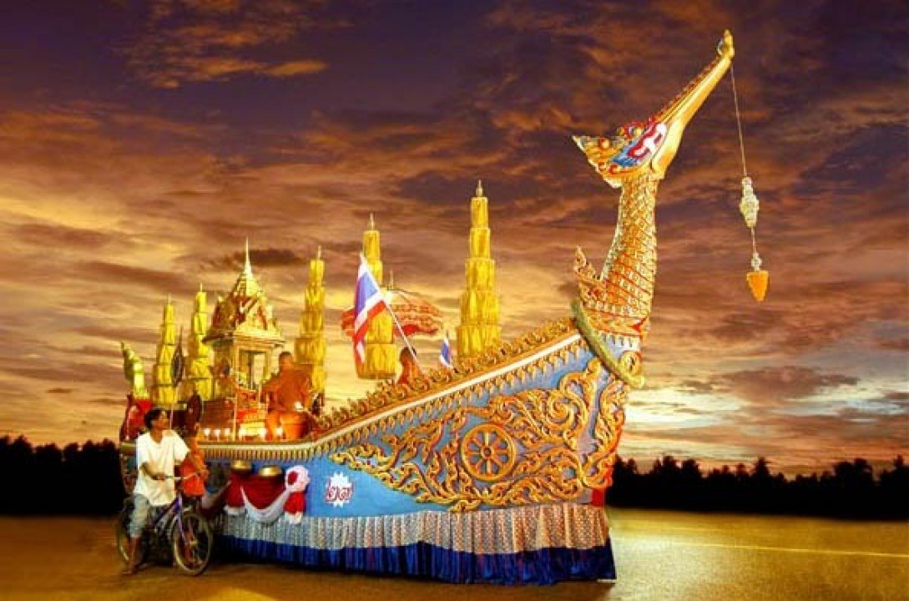
ความเชื่อเกี่ยวกับประเพณีชักพระ
ประเพณีลากพระเป็นประเพณีที่เชื่อว่าการลากพระจะช่วยให้เกิดอานิสงส์ผลบุญ ทำให้ฝนตกตามฤดูกาล และการทำบุญจะช่วยส่งผลบุญกุศลให้ประสบความสำเร็จ นอกจากนี้ประเพณีลากพระยังเป็นการแสดงให้เห็นความสัมพันธ์ระหว่างวิถีชีวิตของคนประกอบอาชีพเกษตรกรรมกับประเพณี และแสดงถึงความพร้อมใจที่จะทำบุญทำกุศลรวมถึงความสนุกสนานครื้นเครงในกิจกรรมต่าง ๆ ที่ได้ร่วมกันปฏิบัติงานบุญในครั้งนี้
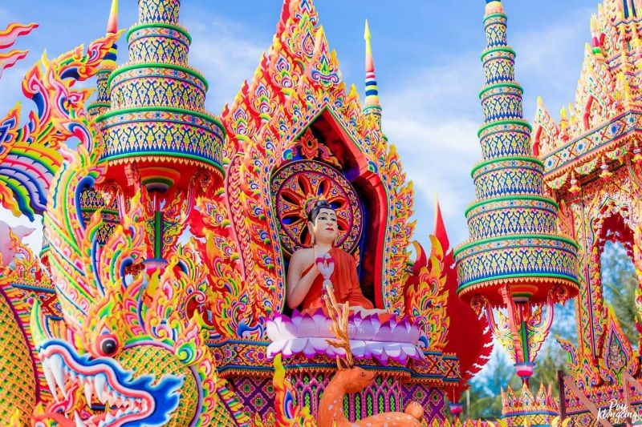
ความสำคัญประเพณีชักพระ
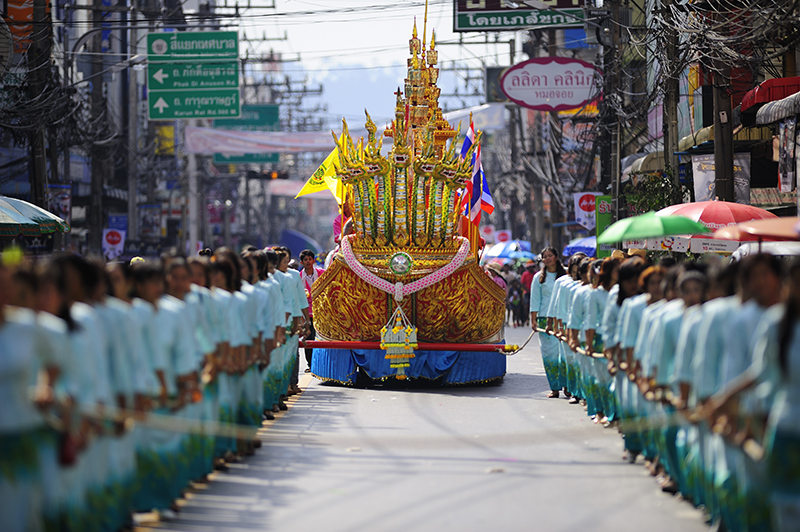ความสำคัญประเพณีชักพระ
ประเพณีลากพระเป็นประเพณีที่เชื่อว่าการลากพระจะช่วยให้เกิดอานิสงส์ผลบุญ ทำให้ฝนตกตามฤดูกาล และการทำบุญจะช่วยส่งผลบุญกุศลให้ประสบความสำเร็จ นอกจากนี้ประเพณีลากพระยังเป็นการแสดงให้เห็นความสัมพันธ์ระหว่างวิถีชีวิตของคนประกอบอาชีพเกษตรกรรมกับประเพณี และแสดงถึงความพร้อมใจที่จะทำบุญทำกุศลรวมถึงความสนุกสนานครื้นเครงในกิจกรรมต่าง ๆ ที่ได้ร่วมกันปฏิบัติงานบุญในครั้งนี้
วิธีการประกอบพิธี
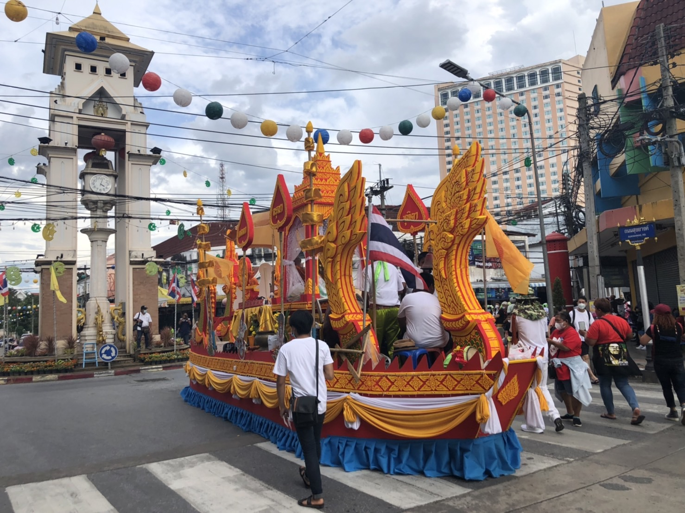พิธีการชักพระ
1.ก่อนการชักพระ ๑๐-๑๕ วัน ชาวบ้านและชาววัดจะช่วยกันจัดเตรียมทำเรือพระสำหรับที่จะลากกันอย่างหรูหรา ข้างบนทำเป็นบุษบกสำหรับประดิษฐานพระพุทธรูป ในช่วงเวลาก่อนถึงวันชักพระนี้จะมีการ "คุมโพน" หรือ "คุมพระ" คือการประโคม ฆ้อง กลอง ตะโพน เพื่อเป็นการซ้อมหรืออุ่นเครื่อง และเป็นการสร้างบรรยากาศอันคึกคักให้ชาวบ้านได้เตรียมตัวสำหรับกาลอันสำคัญนี้
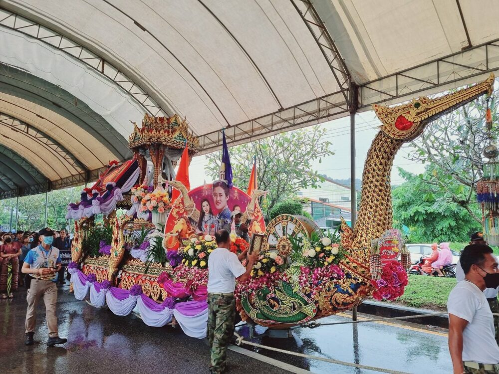2. เรือพระบกแต่เดิมจะมีตัวไม้ใหญ่ ๒ อัน วางรองเป็นที่สร้างบุษบก การชักพระจึงเป็นการลากจริง ๆ ปัจจุบันใช้รถยนต์แทน การชักพระบกจะลากผ่านหมู่บ้าน จากวัดหนึ่งไปยังอีกวัดหนึ่ง หรือไปยังที่ชุมนุมเรือพระ ส่วนเรือพระน้ำจะทำเป็นแพโดยใช้เรือ ๑-๓ ลำ เป็นที่ตั้งของแพสำหรับลากไปในแม่น้ำลำคลองหรือทะเล

3. ในวันชักพระ คือ วันแรม ๑ ค่ำ เดือน ๑๑ ตอนเช้าตรู่ชาวบ้านจะพากันไปทำบุญตักบาตรหน้าเรือพระเมื่อพระสงฆ์ฉันภัตตาหารแล้วจะเริ่มชักพระไปสู่ที่ชุมนุมเรือพระ ในอำเภอเมืองสุราษฎร์ธานีเรือพระจะมาชุมนุมกันที่ที่กำหนดไว้ อย่างเช่นที่สุราษฎร์ธานี จะทำที่ริมแม่น้ำตาปี บริเวณท่าเรือเกาะสมุย เมื่อพระสงฆ์ฉันเพลแล้วจะมีการ "ซัดต้ม" ซึ่งเป็นเกมการแข่งขันปากันด้วยต้ม นอกจากนั้นในจังหวัดนี้ยังมีการ "แข่งเรือ" ตามปกติเรือพระจะกลับวัดในตอนเย็นของวันชักพระ แต่สำหรับในจังหวัดสุราษฎร์ธานี หลังจากมีการสมโภช ๑ คืนแล้ว เรือพระจะยังคงอยู่เพื่อให้ชาวบ้านไปทำบุญ ๓-๔ วัน จึงจะกลับวัด
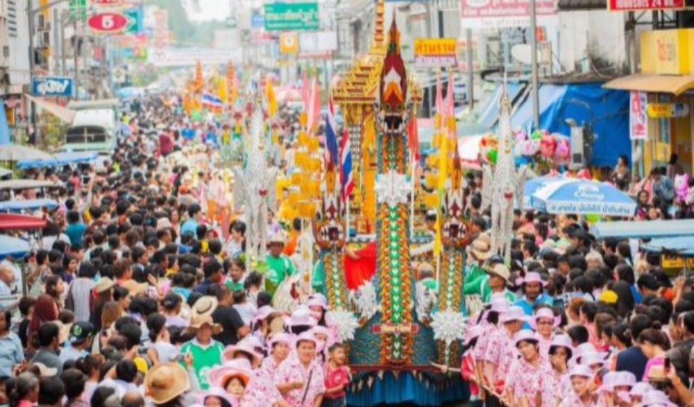ของใส่บาตร
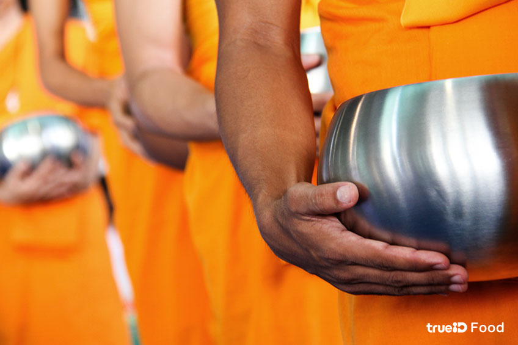ข้าวต้มลูกโยน
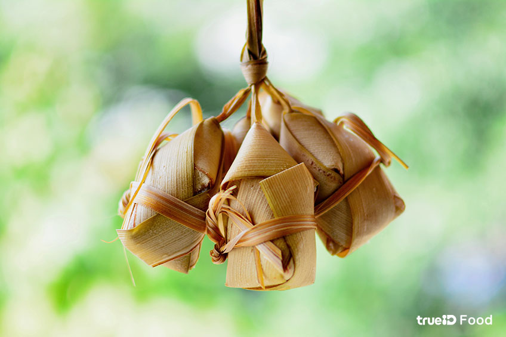ข้าวต้มลูกโยนข้าวต้มลูกโยน หรือ ข้าวต้มหาง ทำมาจากข้าวเหนียวผัดกับกะทิ ผสมน้ำตาล เกลือ จะใส่ถั่วดำกับกล้วยน้ำว้าหรือไม่ใส่ก็ได้ จาดนั้นนำมาห่อด้วยใบเตย หรือใบมะพร้าวอ่อน คล้ายข้าวต้มมัด แต่จะต่างกันที่การห่อ โดยการห่อข้าวต้มลูกโยน จะมีการเหลือส่วนของใบออกมาให้เป็นลักษณะคล้ายหาง เพื่อให้สะดวกในการใส่บาตรของชาวพุทธนั่นเองค่ะ ข้าวต้มลูกโยน เป็นอีกหนึ่งอาหาร ที่เป็นสิ่งที่ขาดไม่ได้ในการตักบาตรเทโว เลยทำให้บางพื้นที่เรียกงานตักบาตรเทโว ว่า งานตักบาตรลูกโยน ซึ่งก็สามารถใช้ข้าวต้มมัดมาใช้ในการตักบาตรเทโวได้เช่นกันค่ะ
แกงเขียวหวาน

แกงเขียวหวาน เป็นอาหารไทยประเภทแกง ประกอบด้วยเนื้อ ปลา ไก่ หรือหมู และผัก ปรุงรสด้วยกะทิ มะเขือ น้ำตาล น้ำปลา ใบมะกรูด และใบโหระพา นิยมรับประทานกับข้าวสวยหรือขนมจีนน้ำพริกแกงมีสีเขียวเพราะใช้พริกขี้หนูสดสีเขียว บางท้องที่ใส่ใบพริกลงไปตำด้วย
แกงส้มกุ่ง
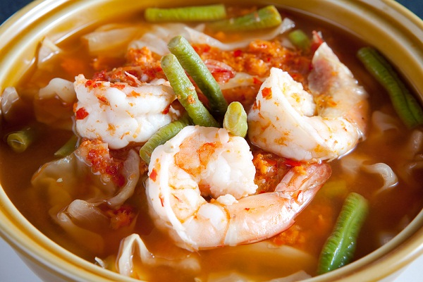แกงส้มกุ่ง ป็นอาหารที่นิยมกินกันทุกภาค แต่ละภาคจะมีส่วนผสมและรสชาติที่แตกต่างกันตามความชอบ เช่น ภาคใต้จะมีรสเผ็ดร้อนนำและเปรี้ยวตาม ส่วนภาคกลางรสชาติของแกงส้มจะมีรสเผ็ดเล็กน้อย นอกจากเผ็ดแล้วยังมีรสเปรี้ยว เค็ม และหวาน ส่วนของรสเปรี้ยวได้มาจากน้ำมะขามเปียก รสหวานจากน้ำตาลปี๊บ รสเค็มจะใช้เกลือหรือน้ำปลาก็ได้
ไข่พะโล้ยางมะตูม
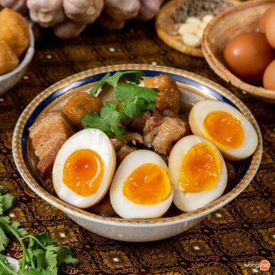ไข่พะโล้ยางมะตูม เป็นอาหารที่นิยมมาใส่บาตร หน้าตาคล้ายๆไข่พะโล้ทั่วไปแต่ ตรงส่วนไข่แดง จะเยิ้มกว่าปกติน่ากินมากๆ
ห่อหมกพริกหวาน
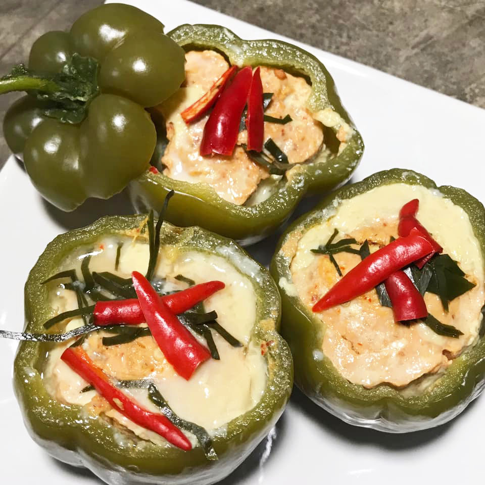ห่อหมกพริกหวาน มีทั้งกลิ่นหอมจากสมุนไพร เนื้อปลากรายที่เข้ากันได้ดีกับพริกแกง และวาวายังใช้ กะทิเรียลไทย ที่ผสมกับเนื้อห่อหมก ทำให้ห่อหมกมีความกลมกล่อมจากรสหวานมันของกะทิ
ขนมจีนนำ่ยากะทิ
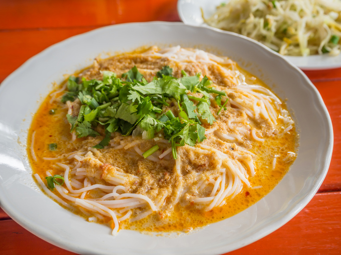ขนมจีนนำ่ยากะทิ เป็นอาหารไทยรสชาติเข้มข้น ที่มีประวัติความเป็นมาอันยาวนาน แม้เมนูนี้จะเขียนว่าขนมจีน แต่ก็ไม่ใช่อาหารจีนแต่อย่างใด เพราะในความเป็นจริงแล้วขนมจีน เป็นอาหารเส้นที่ได้รับอิทธิพลมาจากอาหารมอญ โดยชาวมอญเรียกอาหารเส้นนี้ว่า “คนอมจิน” จึงเป็นที่มาของชื่อเรียกขนมจีนนั่นเอง ซึ่งขนมจีนนี้ได้รับความนิยมรับประทาน
แหล่งที่มาข้อมูล
ข้อมูล
ประเพณีชักพระ ชักพระ : ประเพณีทำบุญในวันออกพรรษาของชาวนครศรีธรรมราช ประวัติความเป็นมาของประเพณีชักพระ